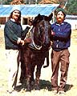

Any grower worth his or her sod knows that the new year really begins on the first day he or she starts breaking ground for spring
planting. And we'd like to mark this agricultural beginning by telling you what's happening in MOTHER's own garden!
For the firs. t spring in the last five, Kerry and Barbara Sullivan won't be tending the crops and flowers out at our Ecological Research Center. Yes, that dedicated couple has moved on to study biodynamics (the agricultural method we examined in detail on pages 82-85 of our last issue) at Emerson College in England. But our plants shall hardly perish, because two fine horticulturists will be serving in the Sullivans' stead. Newcomers Franklin Sides and Walker Abel will be caretaking our many organically grown flowers, herbs, vegetables, fruits, and field crops.
And speaking of change, Sides and Abel are working on a new - well, actually, a distinctly old - method of breaking ground this spring . . . namely, horse plowing. The five-year-old, 1,100-pound part-Morgan/part-Belgian draft mare in the accompanying photo is Molly, our new horse. And that's our chief plowman Franklin on her right. Now Molly is a particularly well-trained work animal. Mr. Sides, however, still has a thing or two to learn. As he readily admits, "Molly is breaking me in. I'm apprenticing to her ."
How does he like it? "That crazy horse is the most exciting thing happening to me right now," Franklin says joyfully. "I tell you, it's a lot different from riding a tractor. You can hear the earth breaking as you plow and see life in the soil - worms and their tunnels, for instance - as you go.
"Of course, you also have to be able to communicate with a horse . . . you can't just turn the steering wheel, you know. But Molly does a fine job, and she's quite economical for a small setup like ours. We're even planning to breed her to a purebred Belgian this year so we can 'reproduce our own tractor'!"
Franklin does allow that the task of learning horse plowing isn't all roses: "Spending a day behind Molly wears me all the way out, mostly because I'm still learning how to do it. She could probably plow an acre of sod in a day, but - right now - I'll be clanged if I could!"
THE MINIGARDEN COMPARISON
Another exciting project our new gardeners have undertaken involves growing four side-by-side experimental minigardens. Each naturally fertilized plot will contain the nine vegetables most raised by home gardeners: tomatoes, peppers, green beans, cucumbers, onions, lettuce, summer squash, carrots, and radishes. In fact, each will carry the same number of plants of each type. But the areas will display four different organic methods: biodynamic/French intensive (with fully double-dug beds) . . . rototilled biodynamic/French intensive (in which the raised beds are created by tilling the entire plot and then raking the loose pathway soil up onto the growing beds) . . . conventional "till it and plant it in rows" gardening . . . and deep mulching (à la Ruth Stout) in a conventional row garden. Since the last two methods require more space than the first two, the four plots won't all be of the same size . Our growers designed 18' X 42' areas for the deepmulch and conventional test gardens, while they should be able to squeeze the same number of plants into 4' X 42' plots in the two biointensive beds!
Walker and Franklin will keep detailed records of yields and work hours on the four minigardens. And while the results - specific to one summer in one locale with one set of growers - won't constitute a valid scientific test, they should provide some suggestive comparisons. Did you ever wonder if a double-dug garden really demands a lot more time overall than a plain rototilled one? Or if you can get the same yields - in the same amount of space - from a rototilled biointensive plot as from a hand-dug one? Or if deep mulching is suitable for moist climates?
We've wondered . . . and we'll let you know what we find out!
THAT'S NOT ALL
Preparing fields and minding minigardens are hardly the only things our new growers will be up to this year. Franklin and Walker also have a brand-new gardening talk planned for Eco-Village visitors that focuses on detailed aspects of growing and using specific vegetables, flowers, and herbs. They'll be coordinating an expanded apprentice program, training nine volunteer gardeners in homescale horticulture. And - let's not forget - the pair will get to tackle the considerable task of managing over one hundred 4' X 30' double-dug beds in our main vegetable and flower garden!
Yes sir, you can bet MOM's gardeners will have their hands (and plots) full! So before they get too bound to the soil, let's spend a relaxed moment getting to know a bit more about Franklin Sides and Walker Abel.
The lean and wiry Franklin earned a degree in field-crop technology at what he calls "a state cow college" and was teaching gardening at a nearby camp when he met and got to know the Sullivans. He has welcomed the opportunity to work in MOTHER's gardens. As Sides puts it, "I feel we all should have some kind of connection with the process of producing our own food. By working here, I feel I can help in a small way to make that connection more widespread . . . by helping others learn how to grow healthful, organic food." Incidentally, raising "baby tractors" is not the only type of reproduction that interests this gardener: His wife Wendy is expecting a baby in July!
Franklin does not fit the image of the serene gardener/philosopher. By his own admission, he tends to be a bit excitable, worried about production. Walker, though, has a calm, quiet nature that provides a counterpoint to his high-energy cohort. The patriarch of a horticultural family (his wife Olivia works in the garden and tends the bees, while his three-year-old son Stuart wishes he were old enough to run lawn mowers), Walker developed many of his gardening skills as an apprentice in the Santa Cruz University gardening program that was founded by famed horticulturist Alan Chadwick. "My interest in this work started of because I saw gardening as a way to really care for the planet . . . to say that in this one place we're going to do whatever we can to make the earth healthy and to further life, all life. As I worked more and more with plants, though, I started to find a joy in gardening. You know that old proverb 'If you want to be happy for one day, get drunk. If you want to be happy for three days, get married. If you want to be happy for a lifetime, be a gardener.' That's certainly proving true for me."
Sides's and Abel's contrasting interests ("I'm horticulture, he's agriculture," Walker quips) and personalities make them quite a complementary and well-qualified pair. So we're absolutely positive that this year they'll raise the best Eco-Village gardens ever. But then, it is spring, that season when every garden is going to be perfect, before insects devour leaves, before storms ruin crops, before weeds swallow all.
|
 |
|
|